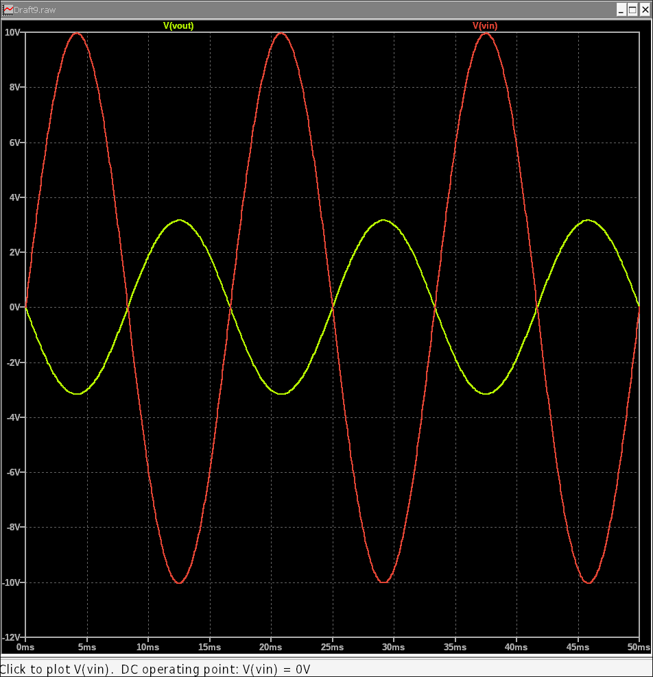

11. Using Transformers
Transformers are essential components for electrical isolation, voltage step-up/step-down, and impedance matching. In LTspice, you can easily simulate an ideal transformer by defining two inductors and coupling them with a mutual inductance directive. This tutorial will walk you through setting up a simple step-down transformer circuit and simulating its behavior.
11.1 Setting Up the Transformer Circuit
We'll build a circuit with an AC voltage source on the primary side, a transformer, and a load resistor on the secondary side.
- New Schematic: Open a new schematic (File > New Schematic).
- Place Components:
- Add a voltage source (voltage) for the primary side. Right-click on it, select Advanced, and choose SINE. Set the following parameters:
- V_offset: 0
- V_amplitude: 10V
- Freq: 60Hz
- Also, we need to add a small series resistance to work the circuit properly. Add a series resistance of about
0.1ohm.
- Add two inductors (ind), one for the primary coil (L1) and one for the secondary coil (L2).
- Add a load resistor (res), R1 (e.g., 1k).
- Add a voltage source (voltage) for the primary side. Right-click on it, select Advanced, and choose SINE. Set the following parameters:
- Wire the Circuit:
- Connect the AC voltage source across the primary inductor, L1.
- Connect the secondary inductor, L2, in series with the load resistor, R1.
- Connect the bottom terminals of the voltage source and the load resistor to the ground.
- Save: Save your schematic (e.g., transformer_demo.asc).
Your schematic should look like this:
11.2 Configuring the Mutual Inductance
To make the two inductors behave as a transformer, we need to specify a mutual inductance between them using a .k directive.
- Set Inductor Values:
- Right-click on L1 and set its value to 100m (100mH).
- Right-click on L2 and set its value to 10m (10mH).
- *Note:* This gives us a turns ratio of N_1/N_2 = sqrt(L_1/L_2) = sqrt(100mH/10mH) = approx 3.16:1.
- Add a SPICE Directive: On your schematic, go to Edit > SPICE Directive (or press ".").
- Define Mutual Inductance: In the dialog box, type the following:
Here's a breakdown of the parameters:K1 L1 L2 1- K1: The name of the coupling statement.
- L1 L2: The names of the two inductors being coupled.
- 1: The coupling coefficient (k). A value of 1 represents a perfect, ideal transformer.
- Click OK and place this directive on your schematic.
11.3 Configuring and Running the Simulation
We'll use a Transient Analysis to see the AC signal transformation.
- Set Simulation: Go to Simulate > Configure Analysis and select the Transient tab.
- Set Stop Time to 50m (50 milliseconds), which is enough to see a few cycles of our 60Hz signal.
- Click OK and place the .tran directive on your schematic.
- Run Simulation: Go to Simulate > Run or press the Play icon.
11.4 Analyzing the Waveforms
The plot window will open. Probe the following nodes:
- The primary voltage (the output of the sine wave source).
- The secondary voltage across the load resistor (R1).
You will see that the secondary voltage is a stepped-down version of the primary voltage, with its amplitude reduced by the turns ratio of sqrt(10). The phase is also changed due to the polarity. This simulation demonstrates how transformers convert AC voltage levels while isolating the primary and secondary sides of the circuit.
This concludes our look at using an ideal transformer in LTspice. You can experiment with different turns ratios by changing the values of L1 and L2 to see how the output voltage changes.